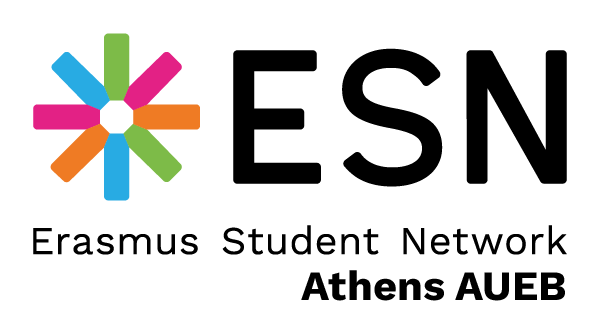
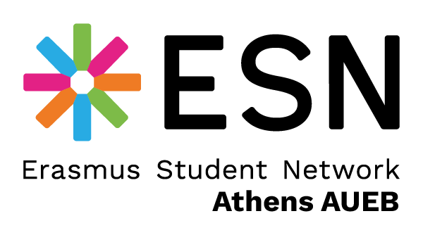
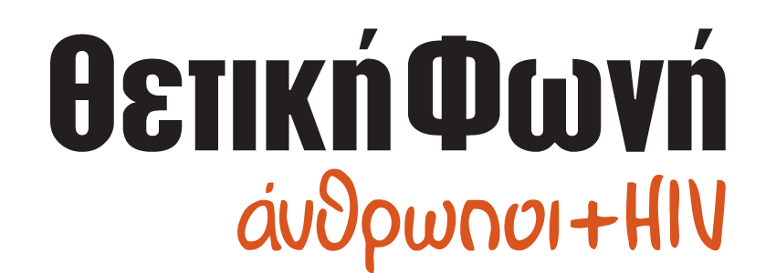
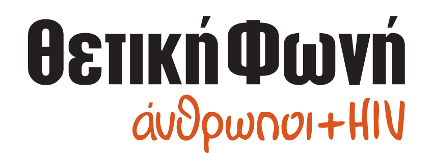

view bio
Η Madame Ginger δεν είναι απλά ένα όνομα, αλλά μια φιλοσοφία γύρω από το comfort,
plant-based φαγητό και έναν πιο sustainable τρόπο ζωής! 🌱🍽️ Με αστείρευτο πάθος για τη μαγειρική,
έχει δημιουργήσει το Madame Ginger’s Food Studio στην αγαπημένη της Κυψέλη, μοιράζοντας καθημερινά
εύκολες συνταγές, food spots και green tips με τα gingerakia της! 💚
📖Είναι η συγγραφέας των ΔΕ ΚΟΥΚΜΠΟΥΚ & GREEN ΚΟΥΚΜΠΟΥΚ και η πρώτη που έφερε τη vegetarian & vegan
κουζίνα στην ελληνική τηλεόραση με το Green Kitchen by Madame Ginger! 📺
view bio
Η καρδιά του event χτυπάει δυνατά και στα παρασκήνια—και η Αλίσια Ταμπάκου είναι εδώ για
να καταγράψει κάθε στιγμή! 🎬
📱 Με viral TikTok presence, αυθόρμητες ατάκες και μια μοναδική ικανότητα να δίνει χρώμα στην
πραγματικότητα, απομακρύνοντάς την από κάθε τι γκρι, ξέρει πώς να μετατρέπει το χάος στο πιο fun
content.
🧠 Η Αλίσια έχει πάθος για την Κλινική Ψυχολογία, τα ανθρώπινα δικαιώματα και την τέχνη και βλέπει
τον κόσμο με μια δόση σαρκασμού και πολλή ενσυναίσθηση. Και καθώς η ζωή είναι ένα ατελείωτο τρέξιμο,
εκείνη την αντιμετωπίζει με χιούμορ και αρκετές δόσεις ειρωνείας. 🤝
view bio
Φιλόλογος με πτυχίο από το Δημοκρίτειο Πανεπιστήμιο Θράκης (ΔΠΘ) και M.Ed. στην
Εκπαίδευση & Τεχνολογίες σε Συστήματα Εξ Αποστάσεως Διδασκαλίας και Μάθησης από το Ελληνικό Ανοικτό
Πανεπιστήμιο (ΕΑΠ), αφιερώνει το έργο της στην εξέλιξη της εκπαίδευσης. 📚
Πέρα από τη διδασκαλία, είναι η δημιουργός & διαχειρίστρια της εκπαιδευτικής ιστοσελίδας
Philologisti-ina.gr και της εκπαιδευτικής πλατφόρμας Moodle Edu.philologist-ina.gr, προσφέροντας
πολύτιμους πόρους σε μαθητές και εκπαιδευτικούς. 👩🏫
Επιπλέον, είναι συγγραφέας του βιβλίου «Επίλεξε το σωστό» (Εκδόσεις Κλειδάριθμος) και μοιράζεται τις
γλωσσολογικές της γνώσεις με το ευρύ κοινό ως συνεργάτιδα της εκπομπής «Πρωίαν σε είδον», μέσα από
τη δική της γλωσσολογική στήλη. 🖋📺
view bio
Ως Οργανωσιακή Ψυχολόγος με MSc στη Διοίκηση Ανθρώπινου Δυναμικού και άδεια ασκήσεως επαγγέλματος κλινικής ψυχολόγου, είναι εξειδικευμένη στο Business Coaching & Agile Leadership. 💡 Η διαδρομή της είναι γεμάτη από εντυπωσιακά ορόσημα! ✅ Είναι υποψήφια Διδάκτωρ στο EU Business School, οπού ερευνά την οργανωσιακή συμπεριφορά. ✅ Είναι βραβευμένη business coach, με εμπειρία στη διαμόρφωση εταιρικής κουλτούρας και στην καθοδήγηση στελεχών Fortune 500 εταιρειών παγκοσμίως! 🌍🔥 ✅ Είναι υπέρμαχος των ανθρωπίνων δικαιωμάτων και της ψυχικής υγείας, με δράσεις για την ενδυνάμωση των γυναικών. ✅ Από το 2023, εκπαιδεύει ηγέτες δημόσιας υγείας για τον Παγκόσμιο Οργανισμό Υγείας, που συμμετέχουν σε αποστολές στο Καζακστάν και την Ουκρανία. 🏆💙
view bio
🧠 Ο Κωνσταντίνος Γιαννουκάκης είναι ψυχολόγος MSc και ψυχοθεραπευτής με εκπαίδευση στην Κλινική και Κοινοτική Ψυχολογία, καθώς και στη Γνωστική-Αναλυτική Ψυχοθεραπεία με σπουδές στη Νέα Υόρκη και στο Λονδίνο. 🌍 Με πολυετή εμπειρία στην ψυχοκοινωνική μέριμνα και την κοινωνική ενσωμάτωση ατόμων με ψυχοκοινωνικές δυσκολίες, προσφέρει υπηρεσίες ατομικής και οικογενειακής συμβουλευτικής, θεραπείας ζεύγους και mindfulness. 🧘♂️
view bio
Ο Ευάγγελος Διοικητόπουλος είναι Αναπληρωτής Καθηγητής Οικονομικών στο ΟΠΑ, Διευθυντής
του Εργαστηρίου Μελετών Οικονομικής Πολιτικής και Ερευνητικός Συνεργάτης στο King’s College London,
ενώ έχει διανύσει πάνω από 10 έτη ακαδημαϊκής σταδιοδρομίας στο Ηνωμένο Βασίλειο. 📚
🔬 Η έρευνά του ξεπερνά τα όρια των οικονομικών, καθώς συνδυάζει ψυχολογία, τέχνη και ανθρωπολογία
με προηγμένες μεθόδους ανάλυσης δεδομένων και τεχνητής νοημοσύνης. Με αυτή τη διεπιστημονική
προσέγγιση, αναζητά νέους τρόπους κατανόησης της ανθρώπινης συμπεριφοράς και των κοινωνικών
φαινομένων. 🔍
🚀 Ως ιδρυτής των SciPythia και συνιδρυτής της EduCoach, εφαρμόζει αυτή τη γνώση στην πράξη,
αξιοποιώντας την τεχνολογία για να μεταμορφώσει την εκπαίδευση και την έρευνα, φέρνοντας καινοτόμες
λύσεις στη μάθηση. 💻
view bio
Ο Θέμης Καραμουρατίδης έρχεται στη σκηνή μας ως speaker και δεν θα μπορούσαμε να είμαστε
πιο ενθουσιασμένοι!
✨Ένας από τους σημαντικότερους συνθέτες και ενορχηστρωτές της γενιάς του, με μουσικές που έχουν
σημαδέψει τη σύγχρονη ελληνική σκηνή. Από τις σπουδαίες συνεργασίες του με τη Νατάσσα Μποφίλιου και
τον Γεράσιμο Ευαγγελάτο μέχρι τις συνθέσεις του για κορυφαίους ερμηνευτές, το θέατρο και τον
κινηματογράφο, η μουσική του ξεχωρίζει για το συναίσθημα, τον λυρισμό και την αυθεντικότητα.
Μια μοναδική ευκαιρία να γνωρίσουμε τον άνθρωπο πίσω από τις μελωδίες που αγαπάμε! 🎼✨
view bio
Όντας επικεφαλής πολιτικής του WWF Ελλάς, με σπουδές φιλοσοφίας και μεταπτυχιακό στην
περιβαλλοντική ηθική, η Θεοδότα έχει αφιερώσει την καριέρα της στην προώθηση οικολογικών
πολιτικών και στη διαμόρφωση στρατηγικών για την προστασία του πλανήτη🌍.
Μέσα από τη δράση της, επιδιώκει να αναδείξει την κλιματική αλλαγή ως πραγματική κρίση και να
κινητοποιήσει θεσμούς και κοινωνία για άμεσες, αποτελεσματικές λύσεις🫂.
view bio
Η Αλεξάνδρα Στράτου, Αναπληρώτρια Καθηγήτρια στο Πανεπιστήμιο Πατρών και principal
architect του askarchitects, εξερευνά τη δυναμική της αρχιτεκτονικής σε κάθε κλίμακα – από το
αντικείμενο μέχρι το αστικό τοπίο. 🏛️📐
Με βραβευμένα έργα και ενεργή συμμετοχή σε καινοτόμες ερευνητικές πρωτοβουλίες, εστιάζει στον ρόλο
της αρχιτεκτονικής παραγωγής στην περιβαλλοντική και κοινωνική βιωσιμότητα. 🌿
Ακόμη, ως ιδρυτικό μέλος του D.A.ST Arteam, έχει συνδημιουργήσει την εμβληματική εγκατάσταση "Desert
Breath" στην έρημο της Αιγύπτου, ενώ μέσα από την ερευνητική ομάδα HIVE, διερευνά το μοντέλο
κατοίκησης "Build to Rent" και την εφαρμογή του σε μεγάλη αστική κλίμακα. 🌍♻️
view bio
Ο Θέμης Καίσαρης είναι ένας από τους πιο καταξιωμένους αθλητικούς δημοσιογράφους στην
Ελλάδα. Με πορεία από το 1996 στο Sport.gr, την ΕΡΑ Σπορ, το Sentra και σήμερα ως Διευθυντής
Σύνταξης στο SPORT24 Radio 103.3, έχει παρακολουθήσει από πρώτο χέρι την εξέλιξη του αθλητικού
ρεπορτάζ. 🎙️
Ακόμη, μέσα από το podcast Ζοσιμάρ και την εκπομπή OnlyFacts, χρησιμοποιεί τα δεδομένα της Opta για
να προσφέρει μια νέα διάσταση στην ανάλυση του ποδοσφαίρου, αποκαλύπτοντας την κρυφή στρατηγική πίσω
από κάθε παιχνίδι. 📊⚽
Από το παιδικό του όνειρο να γίνει τερματοφύλακας, μέχρι τη μετατροπή του σε έναν από τους πιο
καινοτόμους αθλητικούς αναλυτές, ο Θέμης μας προσκαλεί να δούμε το ποδόσφαιρο με έναν νέο τρόπο –
μέσα από τα δεδομένα και τις ιστορίες που κρύβονται πίσω από κάθε στατιστικό.
view bio
🔭 Ο Μάνος Σαριδάκης είναι Διευθυντής Ερευνών στο Ινστιτούτο Αστρονομίας, Αστροφυσικής,
Διαστημικών Εφαρμογών και
Τηλεπισκόπησης του Εθνικού Αστεροσκοπείου Αθηνών, και έχει διαγράψει μια εντυπωσιακή πορεία στον
χώρο
της αστροφυσικής.
🌍 Έχει εργαστεί ως ερευνητής και καθηγητής σε κορυφαία πανεπιστήμια της Γαλλίας, των ΗΠΑ, της Χιλής
και της Κίνας, συμβάλλοντας σημαντικά στην κατανόηση του σύμπαντος.
📚 Το ερευνητικό του έργο περιλαμβάνει πάνω από 300 επιστημονικές δημοσιεύσεις σε διεθνή περιοδικά,
ενώ έχει συγγράψει 5 βιβλία που φωτίζουν πτυχές της αστρονομίας και της διαστημικής επιστήμης.
🏆 Η επιστημονική του επιρροή αναγνωρίζεται διεθνώς, καθώς συγκαταλέγεται στο 1% των πιο
επιδραστικών επιστημόνων παγκοσμίως, σύμφωνα με την κατάταξη του Πανεπιστημίου Stanford!
view bio
Η Αθανασία Μάνου είναι μια καταξιωμένη αρπίστα με διεθνή πορεία, που συνδυάζει την αγάπη
της για τη μουσική με τη διδασκαλία και τη συμμετοχή σε μοναδικά μουσικά projects. Γεννημένη στις
Σέρρες, ξεκίνησε τις σπουδές της στην άρπα σε ηλικία 11 ετών και από τότε η πορεία της την οδήγησε
σε σημαντικές συνεργασίες και ορχήστρες. Σπούδασε στο Τμήμα Μουσικών Σπουδών του ΕΚΠΑ και απέκτησε
το Δίπλωμα Άρπας με Άριστα παμψηφεί και Α’ Βραβείο από το Ωδείο Φίλιππος Νάκας. Στη συνέχεια,
ολοκλήρωσε το Master of Harp στο Conservatorium Maastricht της Ολλανδίας, όπου εξειδικεύτηκε υπό την
καθοδήγηση της Anneleen Lenaerts.
Έχει συμμετάσχει σε διεθνή φεστιβάλ μουσικής δωματίου και έχει παρακολουθήσει σεμινάρια από
κορυφαίους αρπίστες.
Ως εκπαιδεύτρια, έχει διδάξει στο Conservatorium Maastricht και σήμερα μεταδίδει τη γνώση και το
πάθος της στο Εθνικό Ωδείο Ηλιούπολης και το Βυζαντινό Ωδείο, ενώ παράλληλα συμμετέχει σε συναυλίες
και μουσικά projects στην Ελλάδα και το εξωτερικό.
view bio
Ο Evan Garde είναι εικαστικός καλλιτέχνης με εξειδίκευση στην τέχνη της επιτέλεσης
(performance art), εξερευνώντας τη σύνδεση σώματος, ήχου και οπτικοακουστικής αφήγησης. Η πρακτική
του συνδυάζει ηχητικό σχεδιασμό, βίντεο και πειραματικό κινηματογράφο, δημιουργώντας πολυμεσικά έργα
που διερευνούν προσωπικές και συλλογικές εμπειρίες.
Μέσα από την τέχνη του, εμβαθύνει σε ζητήματα ταυτότητας, μνήμης και κοινωνικών δομών, προσκαλώντας
το κοινό σε μία βιωματική εμπειρία πέρα από τα όρια της συμβατικής αφήγησης. Τα έργα του έχουν
παρουσιαστεί σε φεστιβάλ και εκθέσεις, αναδεικνύοντας νέες προσεγγίσεις στη σύγχρονη performance
art.
view bio
Ένα από τα πιο ανερχόμενα ονόματα της ελληνικής μουσικής σκηνής, η Νίνα ξεχωρίζει με
τη χαρακτηριστική της χροιά και την ικανότητά της να μας ταξιδεύει μέσα από κάθε ερμηνεία.
🎶 Από το πρώτο της βήμα το καλοκαίρι του 2022 με το viral remake του «Η Νύχτα Μυρίζει Γιασεμί»
μέχρι τη φετινή της επιτυχία με το «Είναι εντάξει μαζί μου» του Κώστα Λειβαδά, η Νίνα δεν
σταματά να μας εκπλήσσει και να μας συνεπαίρνει!
🌟 Από τη σκηνή στο πλευρό της Μαρινέλλας στη μουσικοχορευτική παράσταση «Σήμερα...» μέχρι τη
φετινή της συνεργασία με τον Τάκη Ζαχαράτο στο «Sweet Dreams», η σκηνική της παρουσία είναι
απολαυστική, γεμάτη ενέργεια και χιούμορ!
view bio
Ο Πάμπλο, 17 ετών, με καταγωγή από την Ελλάδα και την Κούβα, ζει μέσα από τη μουσική, τον
κινηματογράφο και τον χορό. Φοιτητής στο προεπαγγελματικό τμήμα της Κρατικής Σχολής Ορχηστικής
Τέχνης, ονειρεύεται να συνδυάσει τις τέχνες και να δημιουργήσει ένα νέο είδος κινηματογράφου. Από
μικρή ηλικία, επηρεασμένος από τον πατέρα του που είναι μουσικός, γράφει τραγούδια που αφηγούνται
καθημερινές ιστορίες και συναισθήματα. 🎼
Δίπλα του, ο Παναγιώτης, 19 ετών, φοιτητής Ηχοληψίας στο ΙΕΚ Ακμή, με πάθος για τη μουσική. Παίζει
κιθάρα, μπάσο και τραγουδά, ενώ έχει υπάρξει μέλος της ελληνικής underground σκηνής, συμμετέχοντας
σε σχήματα όπως οι Nix και οι Lavender. 🎶
view more
Μάθε πώς να δημιουργείς ήχους και να βρίσκεις ρυθμό χρησιμοποιώντας μόνο το σώμα σου!
view more
Το viral παιχνίδι που δοκιμάζει τις γνώσεις σου έρχεται για να σε πορώσει! Μην αγνώνεσαι, είναι σχεδιασμένο ώστε να μπορείς να συμμετέχεις (ακόμη και να νικήσεις!) χωρίς να είσαι απαραίτητα ξεφτέρι στην γεωγραφία.
view more
Κάνε ένα short dive στα μυστικά της χαρακτικής τέχνης και φτιάξε το δικό σου postcard.
view more
Λίγο πριν το κλείσιμο, χαλάρωσε με μια γευστική εμπειρία, δοκίμασε εκλεκτά κρασιά και ανακάλυψε το αγαπημένο σου!

view more
Ο δρόμος για την επιτυχία: Ανακάλυψε πώς η Dialectica, παγκόσμιος ηγέτης στα insights, βοηθά στη διαμόρφωση των μεγαλύτερων επιχειρηματικών αποφάσεων και επενδυτικών deals.
view more
Ανακάλυψε τον κόσμο της τεχνολογίας μέσα από τις πιο πρόσφατες καινοτομίες και τάσεις που διαμορφώνουν το αύριο!
view more
Ένα ταξίδι στον κόσμο μέσα από τον φακό της ομάδας Marabou.
view more
Ιστορίες που αξίζει να ακουστούν (ίσως είναι και η δικιά σου;)

view more
Μια κατασκευή φωτός που αλλάζει patterns με κάθε αλληλεπίδραση.
view more
Και ΝΑΙ, θα κυκλοφορούν κουταβάκια στον χώρο!
view more
To βανάκι της Θετικής Φωνής θα είναι μαζί μας για να μπορέσει όποιος επιθυμεί να κάνει δωρεάν HIV test.
view more
Old-school gaming για τους λάτρεις του retro vibe.

 


 

| 09:30 - 10:30 |
Arrival & Registration |
| 1st Session | |
|---|---|
| 10:30 - 12:05 |
Athanasia Manou [performance] Opening Remarks Xristina Karathanasi [philology] Zoe Fragou [business] |
| 1st Break 50' | |
| 12:05 - 12:55 |
Workshops Dialectica Body Percussion |
| 2nd Session | |
| 12:55 - 14:05 |
Konstantinos Gianoukakis [psychology] Evangelos Dioikitopoulos [economics] Themis Karamouratidis [art] Evan Garde [performance] |
| 2nd Break 1:30h | |
| 14:05 - 15:35 |
Workshops Πλαίσιο The grey fox [Χαρακτική] ΠΟΛΥ ΚΟΥΛ [Επιτραπέζιο] |
| 3rd Session | |
| 15:35 - 16:30 |
Pablo Soto [performance] Alexandra Stratou [environment] Theodota Nantsou [architecture] |
| 3rd Break 50' | |
| 16:30 - 17:20 |
Workshops Semeli [Wine Tasting] |
| 4th Session | |
| 17:20 - 19:00 |
Themis Kaisaris [sports] Emmanuel Saridakis [astrophysics] Nina Mazani [performance] Farewell |
Μετρό: Ο κοντινότερος σταθμός είναι ο "Κεραμεικός" (Γραμμή 3 - μπλε) και είναι μόλις 400μ. και λίγα λεπτά με τα πόδια μακριά από τον χώρο!
Λεωφορεία & Τρόλεϊ: Αν προτιμάς το λεωφορείο, αυτές οι γραμμές σε βολεύουν: 049, 815, 838, 914, Β18, Γ18.
Για τρόλεϊ, το 21 σε αφήνει επίσης κοντά. Η στάση "Φωταέριο" είναι η πιο κοντινή!
Πάρκινγκ: Δυστυχώς, δεν υπάρχει διαθέσιμος χώρος στάθμευσης, οπότε προτείνουμε να έρθεις με ΜΜΜ.
Είσοδος & Έξοδος:
Μέχρι τις 16:00, η είσοδος & έξοδος γίνονται από την οδό Περσεφόνης.
Μετά τις 16:00, η πρόσβαση είναι από την οδό Πειραιώς.